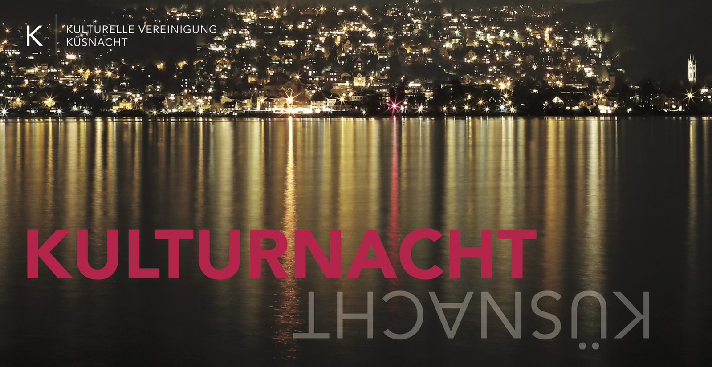

Noch ... Tage

Willkommen an der Kulturnacht Küsnacht
Reservieren Sie sich den Abend am Freitag, 5. September 2025!
Von 17 bis 24 Uhr steht das Küsnachter Dorfzentrum im Zeichen der Kultur.
Kontakt
vorstand@kulturelle-vereinigung-kuesnacht.ch
Die Kulturnacht Küsnacht ist ein Projekt der Kulturellen Vereinigung Küsnacht (KVK).

Die Kulturnacht Küsnacht 2025 wird von einem Nonprofit-Team organisiert:
- Koordination Veranstalter:Martine Peyer
- PR / Medien:Elisabeth Abgottspon
- Gastronomie:Kim Wyder
- Infrastruktur / Bewilligungen:Hans-Peter Fehr
- Sponsoring:Felix Günthardt
- Finanzen:Ilka Allenspach
Die Kulturelle Vereinigung Küsnacht gewährleistet zusammen mit der Gemeinde die Sammlung und den Betrieb des Ortsmuseums Küsnacht, betreut die Galerie im Höchhuus und veranstaltet Vorträge und Ausflüge mit kulturgeschichtlichem Hintergrund und gibt Publikationen zu ortsgeschichtlichen Themen heraus.